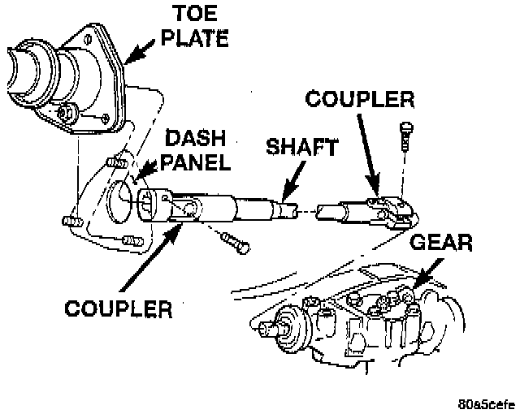
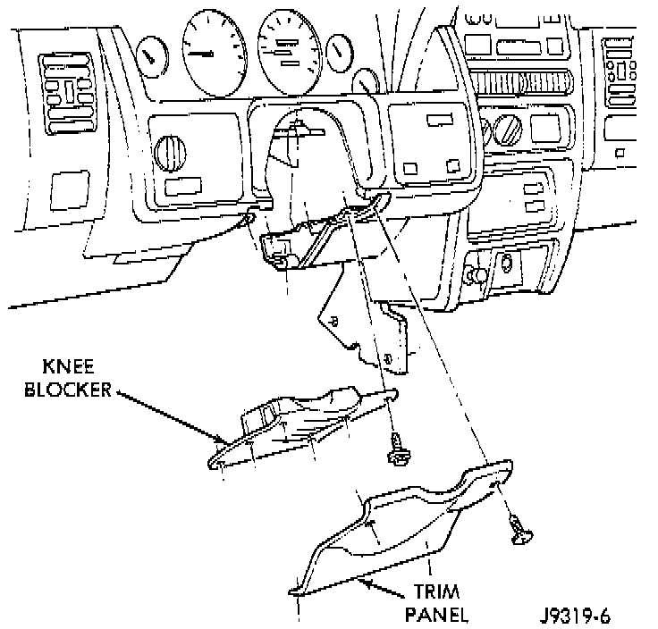
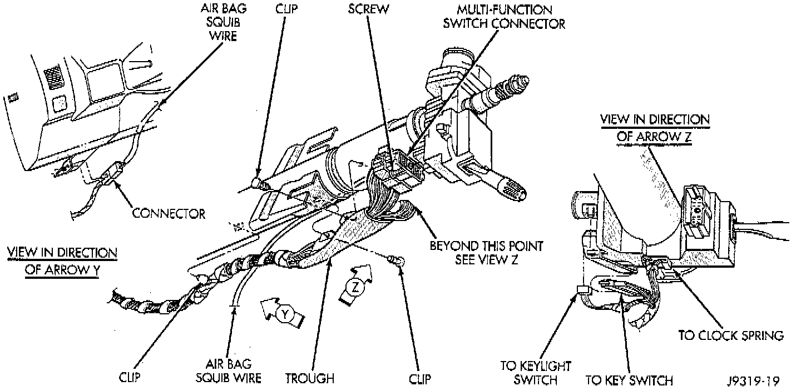
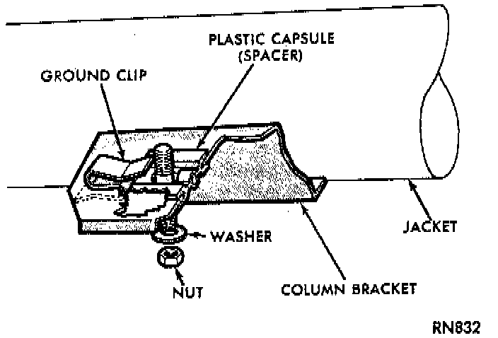

Steering Column: Service and Repair
WARNING: Before servicing the steering column the airbag system must be disarmed. Failure to do so may result in accidental deployment of the airbag and possible personal injury. Refer to Air Bags and Seat Belts.NOTE: Safety goggles should be worn at all times when working on steering columns.
REMOVAL
1. Position front wheels straight ahead.
2. Disconnect the negative (ground) cable from the battery.
3. Remove airbag, refer to Air Bags and Seat Belts.
4. Remove steering wheel with appropriate puller.

5. Remove column coupler upper pinch bolt.

6. Remove the trim panel column cover and support plate.
7. Remove tilt lever from column.
8. Remove the upper and lower lock housing shrouds.
9. Remove the heater cross over tube from under the column.
10. Loosen the panel bracket nuts/studs to allow the column to drop.

11. Remove the wiring harness from steering column.
12. Remove the Interlock cable from the steering column.
13. Remove the toe plate to dash panel nuts.
14. Remove the panel bracket nuts/studs and remove the column.
INSTALLATION
1. With the front wheels in the straight ahead position. Align and install the column to coupler. Do not apply force at the top of the steering column shaft.
2. Remove the column shaft shipping lock pin (installed in service column).

3. Ensure the ground clip is on spacer slot.
4. Install the Interlock cable from the steering column.
5. Install wiring harness connections to steering column. Ensure the wiring is not pinched and all connections are correctly locked in place.
6. Install shaft coupler pinch bolt loose, load column up to panel bracket.
7. Be sure both spacers are fully seated in the column support bracket. Tighten the column panel bracket support nuts/studs to 12 Nm (105 inch lbs.). Ensure the nut is installed on the SHORT threaded side of the stud.
8. Tighten the toe plate attaching nuts to 12 Nm (105 inch lbs.).
9. Tighten the coupler pinch bolt to 49 Nm (36 ft. lbs.).
10. Install the heater cross over tube under the column.
11. Install the upper and lower shrouds and tilt lever.
12. Install the trim panel column cover and support plate.
13. Install the steering wheel and airbag, refer to Air Bags and Seat Belts.
14. Connect the battery ground (negative) cable.